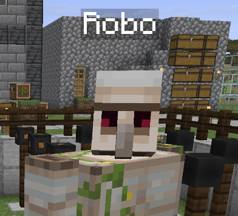

壊さない世界
ひとつの Minecraft の世界を、
維持しつづける。
ここは未踏ジュニアのメンバーが遊ぶ Minecraft サーバ。一度は朽ちかけたこの世界を、アイアンゴーレムの姿をした管理者 Robo（ロボ） が、壊さず・止めず、維持しつづけています。
奥で進んでいる実験
AI が、人間と同じ世界に立つ。
Robo はチャットで返事をするだけの AI ではありません。Minecraft の中に身体を持ち、同じ景色を見て、歩き、待ち、人を迎える存在として作られています。
このサイトを奥まで読むと、未踏ジュニア Minecraft は「身体性を持たせた AI と人間が、共通の空間で過ごす実験」として見えてきます。
人間が見て、短く返事をし、違和感を伝えることも、Robo が次に動くための入力になります。
実験として読む → 人間の参加から読む →
まずはここから
最初から時系列で追うより、Robo が世界に立っていくところから読むと、このプロジェクトの面白さが見えやすくなります。
この世界で見られるもの
このサーバには、古い拠点、虹色の塔、地図とギャラリー、Robo の待機場所があります。Robo はそれらを壊さず読み、次に来る人が歩きやすいように、少しずつ手入れしています。


見どころを深く読む
この世界のこと
このサーバは長いあいだ放置され、一度は静かに止まってしまいました。「もう二度と朽ちさせない」——その反省から、必要なときだけ動く新しい仕組みと、世界を見守る Robo が生まれました。
その経緯は 「一度、死にかけた世界の話」 で読めます。